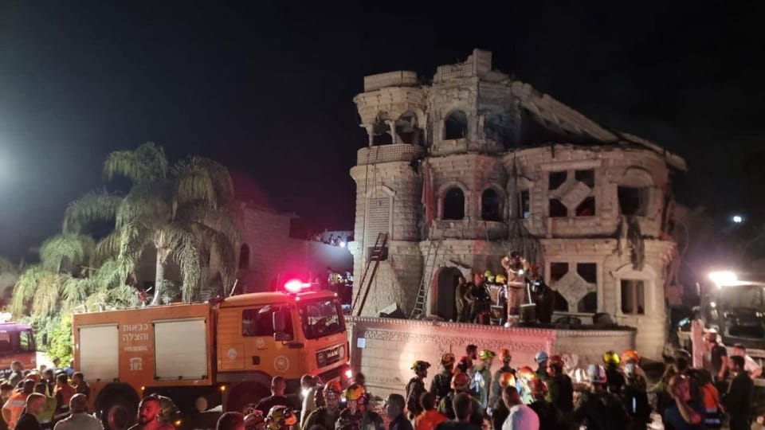

世界苦茶06月15日新闻 | 38条 | 臺灣對華為和中芯實施出口管制

臺灣對華為和中芯實施出口管制 | 特朗普指示移民部門暫停在農田等行業抓捕 | 美明尼蘇達州議員被槍殺 | 美軍陸戰隊正式部署在洛杉磯 | 特朗普在加密貨幣賺取六千萬
每天三件事：
苦茶数据
美元兑人民币：7.19（昨日7.18，前日7.18）
美元兑日元：144.14（昨日143.53，前日143.93）
上证指数：休市（昨日3377，前日3404）
标普500指数：休市（昨日5976，前日6045）
比特币：106019（昨日105053，前日103937）
布伦特原油：74.23（昨日74.51，前日69.46）
中国新闻
• 美国遣返122名非法华人 ：美国移民和海关执法局本月使用一架所谓的“特殊高风险包机“，将122名非法移民遣返中国。据美国之音报道，ICE官网在6月9日发表的声明中说，该机构6月3日牵头了美国国土安全部的上述遣返行动。ICE也说，这次用包机遣返的人员包括96名男性和26名女性，年龄在19到68岁之间，他们都已收到来自全美各地ICE拘留中心的最终递解令。
• 波音向中国交付首架787 ：美国波音公司向中国航空公司交付中美关税战4月开打以来的首架飞机，被视作中美寻求缓解贸易紧张局势的和解迹象。综合第一财经和彭博社报道，波音星期六向上海吉祥航空公司交付了一架全新787-9飞机。航班追踪网站“Flightradar24”显示，一架吉祥航空的787-9梦想客机星期五从西雅图起飞，前往上海浦东国际机场。在中国此前对美加征报复性关税后，吉祥航空曾取消接收这架宽体客机的计划。
• 王毅谴责以色列袭伊朗 ：中国外交部长王毅与伊朗外长阿拉格齐通话时说，中方谴责以色列侵犯伊朗的主权、安全和领土完整，并称以色列对伊朗核设施的攻击可能造成灾难性后果。据新华社报道，中共政治局委员、中国外交部长王毅星期六同伊朗外长阿拉格齐通电话。王毅说，以色列袭击伊朗后，中方已在第一时间公开表明立场。中方明确谴责以色列侵犯伊朗的主权、安全和领土完整，坚决反对针对伊朗官员并造成平民伤亡的粗暴攻击，支持伊朗维护国家主权、捍卫自身合法权益和人民生命安全。
• 香港跻身穆斯林旅游前三 ：香港今年首次跻身全球穆斯林友善旅游目的地前三名，仅次于新加坡和英国。综合香港《经济日报》和网媒“香港01”报道，穆斯林旅游权威机构新月评等与万事达卡联合发布的“2025年全球穆斯林旅游指数”显示，香港在非伊斯兰合作组织成员的穆斯林友善旅游目的地中，由去年的第四位上升至第三，首次进入三甲。该排行榜前十名依序为新加坡、英国、香港、台湾、泰国、爱尔兰、澳大利亚、菲律宾、西班牙及德国。
• 多名中国学者科研不端被通报 ：中国20多名学者因科研不端被集中通报批评，涉及买卖实验研究数据、未经同意使用他人署名、抄袭剽窃、伪造篡改等。中国国家自然科学基金委员会星期五对21个项目的科研不端案件涉事主体进行了处理。据通报，多个高校学者论文存在买卖实验研究数据和未经同意使用他人署名问题，基于撤销项目、追回已拨资金、取消贺聚良国家自然科学基金项目申请和参与申请资格、通报批评等处罚。
• 马英九率学生再访大陆 ：台湾前总统马英九星期六再次率领台湾大学生访问中国大陆，并表示希望通过面对面的交流，进一步推动两岸民间交流更加紧密。综合台湾《联合报》和ETtoday新闻云报道，马英九从周六起率领“大九学堂”学员展开大陆参访行程，将出席在福建厦门举行的第17届海峡论坛，以及在甘肃敦煌举办的“两岸共同弘扬中华文化”活动。马英九在桃园机场启程前说，这是他第四次率团访问中国大陆，再次带领“大九学堂”学员同行，除了希望学生能更深入了解福建历史与产业发展，还期盼通过面对面互动，促进两岸民间交流更密切。
• 盐城拟组建百支高水平球队 ：江苏省城市足球联赛“苏超”爆火后，江苏盐城市发布推动足球改革行动方案，拟组建100支水平高、规范化的队伍。据澎湃新闻报道，《盐城市推动足球改革发展“4个100”三年行动方案（2025-2027年）》公开征求意见。该方案提出，建立推进足球改革发展工作机制，健全相关联席会议制度，加强对足球改革发展的协调推动。
亚太印太新闻
• 韩总统下令制止散发传单 ：据韩国总统府消息，韩国总统李在明星期六指示相关部门制定对策，预防及惩处对朝鲜散布传单的行为。韩国总统府说，星期六凌晨发现有民间团体在仁川市江华岛向朝鲜散布传单。韩国政府此前已表明立场，要求必须终止威胁边境居民日常生活安全、加剧朝鲜半岛军事紧张的非法行为。新华社引述韩国总统府说，李在明已指示所有相关部门制定对策，预防及惩处对朝散布传单的行为，政府将迅速采取应对措施。
• 台湾民众党提案废监察院 ：台湾在野的民众党将于下周提案设修宪委员会，主张废除监察院。综合台湾《联合报》《自由时报》报道，民众党立法院党团提案修宪主张废除监察院，民众党主席黄国昌星期六在新北板桥出席活动受访时说，大多数台湾民众长久以来都期盼能废除监察院，民进党过去也高举废除监察院的口号，只不过在掌权后发现监察院委员位置酬庸好酬佣满，不但有公务车可用，载宠物去美容、自己去按摩、理发等都可使用公务车。黄国昌指出，监察院近期爆发的丑闻、争议已让全台人民看不下去，也让废除诉求取得新动能。他非常感谢所有在野党委员，除民众党八名立委，还有国民党立委罗智强等大力奔走协助，目前共有31名立委签署共同提修宪案，已达到法定门槛。
• 民进党内批赖清德决策闭塞 ：台湾执政的民进党立委坦言，党团时常难以掌握民进党主席、总统赖清德的想法与决策风格，担忧这将影响政策推动与对外论述；在野党立委则批评赖清德采行“小圈圈决策”模式，缺乏透明与沟通。据台湾《联合报》报道，赖清德今年5月在就任总统一周年演说中提出成立主权基金，但据悉他在宣布前并未与财经相关部会充分沟通，知情者仅限于府院少数高层。一名不具名的民进党资深立委直言，前总统蔡英文执政时，府方常派员与党团沟通政策方向，如今赖清德的人事与行事风格倾向用人唯亲、用人唯“新”，党团已难以掌握总统的许多想法与决策内容。
• 国民党全力反制罢免案 ：全台大罢免即将进入第三阶段，台湾在野党国民党主席朱立伦与台北市长蒋万安会面，商讨应对罢免行动的策略。综合台湾《联合报》《中国时报》报道，面对国民党在反罢行动中连遭挫败，朱立伦已启动“爱国者行动”战斗状态，呼吁全党全面动员，反制绿营发起的罢免案。他近期已陆续邀请地方首长会商对策。朱立伦星期五晚间，与蒋万安及台北市议会议长戴锡钦在国民党智库会晤，会议持续约一小时。蒋万安会后受访表示，双方就多个议题深入交流，整体“谈得蛮好”。
• 柬泰重启边界谈判避免冲突 ：柬埔寨和泰国官员在金边举行中断12年的陆地边界划定联合委员会会议，寻求解决两国长期存在的边界争端，这场争端上个月演变为冲突。5月28日，两国军队在柬埔寨、泰国和老挝三国交界的翡翠三角地区交火约十分钟，造成一名柬埔寨士兵死亡。泰国和柬埔寨军队均说这是自卫行动，但同意重新部署士兵以避免冲突。泰国最近几天加强了与柬埔寨的边境管控，而柬埔寨星期五下令军队保持“全面戒备”。
• 马来西亚将提“第13马国计划” ：马来西亚政府将在7月国会复会时提呈“第13马国计划”，作为推动“昌明经济”议程的核心政策之一。马国首相及财政部长安华星期五傍晚主持与政府高级官员的会议，讨论第13马国计划的筹备工作后在脸书发文说，这个计划是应对国家经济挑战的重要起点，主要目标包括缩小发展与收入差距、应对财政赤字，以及加速缓慢的经济结构转型。他说，当局去年中开始筹备第13马国计划，征询了各方利益相关者的意见，包括各部门、州政府、地方政府、公民社会组织及公众的回馈。
• 印度航空客机坠机事故已造成至少270人死亡： 由于大多数尸体无法辨认，目前仍在进行DNA匹配工作。飞行数据记录器也已找到，印度航空事故调查局表示已开始提取数据。印度政府还成立了一个高级别、多学科的委员会来调查此次坠机事故。
科技新闻
• 特朗普靠加密货币赚近六千万 ：唐纳德·特朗普披露，他从其一家加密货币企业获得了近6000万美元的收入，这凸显了美国总统因拥抱数字资产行业而获益。特朗普周五报告表示，他因参与世界自由金融，一家他与儿子小唐纳德·特朗普和埃里克共同支持的加密货币集团，获得了5740万美元的收入。道德监督机构美国政府道德办公室公布的这份超过 200 页的文件显示，特朗普在世界自由金融项目中持有 157.5 亿枚治理代币，这些代币赋予他投票权。在包括图书和房地产投资收益在内的数百项收入中，这家加密货币企业是最大的收入来源之一。
• 纽约通过AI灾难防范法案 ：美国纽约州议员于周四通过了一项法案，旨在防止来自 OpenAI、谷歌和Anthropic 公司的前沿人工智能模型引发灾难场景，包括造成 100 多人死亡或受伤，或造成超过10亿美元的损失。《RAISE法案》的通过代表着人工智能安全运动的一次胜利，该运动近年来随着硅谷和特朗普政府优先考虑速度与创新而逐渐失去阵地。包括诺贝尔奖获得者杰弗里·辛顿和人工智能研究先驱约书亚·本吉奥在内的安全倡导者都支持 RAISE 法案。如果该法案成为法律，将建立美国首套针对前沿人工智能实验室的法律强制透明度标准。法案现已送达纽约州州长凯西·霍楚尔的办公桌。
• 台湾对华为和中芯国际实施技术出口管制： 台湾已将华为和中芯国际列入黑名单。根据台湾经济部国际贸易署周六在其网站上发布的最新版本，华为、中芯国际及其多家子公司已列入其所谓的战略性高科技商品实体名单，该署并未公开宣布这一变化。根据台湾现行法规，本地公司在向实体名单上的用户发货之前，必须获得台湾政府的批准。台北实施的新限制措施可能会至少部分切断华为和中芯国际获取台湾制造AI半导体所必需的工厂建设技术、材料和设备的渠道，例如台积电为英伟达等公司生产的半导体。就华为而言，其在日本、俄罗斯和德国等地的多家海外子公司也被列入台湾更新的实体名单。
财经新闻
• 中土续签货币互换协议 ：中国官方通报，中国和土耳其央行续签本币互换协议，土耳其将设人民币清算安排。据中国人民银行星期五在官网发布的消息，经中国国务院批准，中国人民银行与土耳其中央银行近日续签双边本币互换协议，互换规模为350亿元人民币／1890亿土耳其里拉，协议有效期三年，经双方同意可以展期。双方同时还签署了在土耳其建立人民币清算安排的合作备忘录。中国央行表示，上述安排标志着中土金融合作迈上新的台阶，将有利于两国企业和金融机构使用本币进行跨境结算，进一步促进双边贸易和投资便利化。
• 宁德时代推换电入港 ：中国动力电池巨头宁德时代宣布换电业务将落地香港。综合澎湃新闻和《北京商报》报道，星期五，宁德时代子公司时代电服科技有限公司、时代小桔新能源技术有限公司与第一汽车集团进出口有限公司、龙昇新能源控股有限公司在香港签署战略合作协议，宣布推进换电式营运车辆在香港规模化应用，并同步启动换电基础设施建设。根据合作协议，中国一汽将负责车型开发与售后保障，时代电服负责电池资产运营及回收利用，时代小桔提供换电站数字化运营支持，龙昇新能源落地本地基建与车辆推广。
• 泡泡玛特暂停Labubu韩国线下销售 ：泡泡玛特宣布，由于销售现场存在潜在安全事故担忧，暂停Labubu在韩国线下门店的销售。综合快科技和红星新闻报道，泡泡玛特星期六发布公告，称由于近期线下销售现场存在潜在安全事故的担忧，本公司将顾客的安全置于首位，并致力于提供更优质的服务，因此决定暂时中止Labubu毛绒玩偶及Labubu毛绒钥匙扣全系列产品的线下销售。公告称：“我们将尽最大努力以更令人满意的服务恢复销售。对于此次给您带来的不便，我们深表歉意，并恳请您的理解与支持。”
• 印度关注中国稀土出口限制 ：印度官员本周与中国副外长会面时，据报提出了中国对稀土出口限制的问题。随着汽车制造商持续警示稀土供应短缺恐将影响印度国内产能，相关问题已引起印度高度关切。彭博社引述知情人士透露，印度外交秘书唐勇胜星期四在新德里与中国副外长孙卫东会面时，提出了中国对稀土出口实施管制的问题。双方同意未来继续就关键矿产供应及更广泛的经贸议题保持对话。印度外交部在事后发布的声明中，虽然没有明确提及稀土议题，但暗示了双方正持续就相关问题进行沟通。声明说：“双方同意开展涵盖经贸领域的务实对话，以讨论并解决具体关切事项。”
• 日本制铁收购美钢获批 ：日本制铁公司和美国钢铁公司星期六宣布，美国总统特朗普已签署行政令，有条件“放行”日本制铁收购美国钢铁公司的计划。根据行政令，在满足一定条件的情况下，日本制铁收购美国钢铁公司对美国国家安全的威胁能够充分减轻。因此，特朗普对美国前总统拜登阻止日本制铁收购美钢的行政令进行修正。日本制铁收购美钢获批的前提条件是，日本制铁与美钢两家公司必须与美国政府签署国家安全协定，并承诺遵守协定。日本制铁和美钢当天发布公告说，目前协定已经签订。根据协定，日本制铁将于2028年前投资约110亿美元，美国政府将获得可对企业重要事项行使否决权的“黄金股”。
俄乌战争
• 白罗斯组建无人机特种部队 ：白罗斯已成立无人机部队。新华社报道，白罗斯总统卢卡申科星期五视察布列斯特州别廖佐沃区一个无人机系统训练与应用中心，白罗斯武装力量总参谋长兼国防部第一副部长穆拉韦伊科向卢卡申科汇报情况。据穆拉韦伊科介绍，白罗斯武装力量目前已组建作为特种部队独立组成部分的无人机部队，承担着空中侦察、对敌方实施火力打击、引导和校正火力，以及为其他特种部队提供支援等任务。
• 爱沙尼亚向乌克兰再次交付一批火炮弹药： 爱沙尼亚国防部强调，必须继续支持乌克兰对抗俄罗斯的战争。“已完成！爱沙尼亚已向乌克兰交付更多火炮弹药。乌克兰的安全就是欧洲和跨大西洋的安全。我们必须持续支持乌克兰——让其能够自我防卫，实现公正而持久的和平。”
• 特朗普悄然批准又一笔3,000万美元对乌克兰军援： 特朗普政府昨晚通知国会，已批准向乌克兰武装部队转让一批价值约3,000万美元的“重大防御装备”——《基辅邮报》驻华盛顿记者从两位国会消息人士处获悉。这一决定正值美国国防部长皮特·赫格塞斯结束在国会的多日听证之际，他试图说服议员们相信现政府仍在“动用总统提取权”向乌克兰提供支援，但未透露具体细节。周五，一位参与白宫与国会沟通的政府官员对《基辅邮报》表示，根据《武器出口控制法》，美国对乌军援“尽管今年早些时候曾有短暂中断，但从未停止”。
其他新闻
• 特朗普政府已指示移民与海关执法局等联邦执法部门，暂停在农田、餐馆和酒店等工作场所抓捕非法移民的行动，以免损害这些“关键行业”，影响民生： 消息人士称，这些行业很大程度上依赖移民群体提供劳动力，其中许多从业者是非法移民。
• 接近也门胡塞武装的消息人士称，以色列6月14日晚空袭也门首都萨那胡塞武装领导人住宅区以及胡塞武装安全和情报总部： 消息人士称，空袭导致萨那南部十月十四日街发生爆炸。以色列空袭的目标是“胡塞武装高层领导人的秘密会议”。这次秘密会议由胡塞武装“最高政治委员会”主席迈赫迪·马沙特和军事参谋长阿卜杜勒卡里姆·古马里主持。也门媒体报道说，胡塞武装最高领导人阿卜杜勒·马利克·胡塞、胡塞武装“最高革命委员会”主席穆罕默德·阿里·胡塞和胡塞武装军事情报局局长阿布·阿里·哈基姆也出席了这次秘密会议。
• 以色列和伊朗继续相互袭击，以色列袭击了位于德黑兰的国防部总部、防御创新和研究组织总部、该市附近的两处储油设施以及位于南部布什尔省的南帕尔斯气田： 媒体报道，国防部建筑轻微受损，储油设施情况得到控制，气田冒出大火和浓烟。伊朗也向以色列发起新一轮导弹和无人机袭击。伊斯兰革命卫队称向以色列战机的燃料生产设施发射导弹，该说法未得到以色列证实。目前袭击已造成7人死亡、百余人受伤。
• 伊朗再袭以色列谈判取消 ：伊朗星期六向以色列发动新一波导弹袭击，造成民众伤亡，以色列则指正在打击德黑兰。据法新社报道，随着要求缓和以伊局势的呼声日益高涨，美国和伊朗原定于星期天举行的新一轮和协议谈判被取消，其中伊朗表示无法在以色列的攻击下进行谈判。伊朗方面说，以色列星期五展开的行动以伊朗的防空为目标，袭击了当地关键的核设施和军事设施，造成包括军方高级官员和原子科学家在内的数十人死亡。
• 以色列无人机袭击伊朗最大天然气田，部分产量暂停： 据伊朗媒体报道，周六以色列的一架无人机袭击了伊朗南部布什尔地区的南帕尔斯气田，引发火灾。据称这是以色列在该地区多次空袭的一部分。伊朗官方媒体法尔斯社称，该气田——伊朗最大的天然气生产设施——被“类似无人机的小型飞行器”击中，援引的是当地目击者的说法。半官方的塔斯尼姆通讯社报道称，袭击发生后，南帕尔斯部分区域的天然气生产已暂停。
• 以色列敦促美国加入与伊朗的战争，意图铲除其核计划： 据两名以色列官员透露，在过去48小时内，以色列已请求特朗普政府加入与伊朗的战争，以彻底铲除其核计划。但特朗普政府目前仍与以色列的行动保持距离，认为伊朗若因此袭击美方目标将不具合法性。即使美方的参与仅限于对某一地点的空袭，也将使美国直接卷入战争。然而，如果伊朗的福尔多核设施在此次行动后仍能继续运作，以色列将未能实现“消除”伊朗核计划的目标。
• 伊朗断网之际，马斯克宣布 Starlink 在伊朗启用： SpaceX 创始人埃隆·马斯克周六证实，已为伊朗启用 Starlink 卫星网络。此前，伊朗伊斯兰政权在以色列对其核设施发动袭击后，限制了国内的网络服务。Starlink 是 SpaceX 推出的卫星网络，尤其适用于普通互联网难以覆盖的地区。这些卫星贴近地球运行，可提供低延迟的高速互联网服务。马斯克启用 Starlink 的决定，恰逢伊朗通信部宣布“因当前国家特殊局势”，将全国互联网服务临时限制或中断。该部声明称：“鉴于国家的特殊状况，已对互联网实行临时限制。”
• 特朗普支持者对以伊冲突分裂 ：美国总统特朗普在竞选连任时夸口，能轻松结束以哈冲突和俄乌战事，如今以和平缔造者自居的他可能卷入战火之中。他的许多支持者认为，以色列周五凌晨袭击伊朗，美国可能被拖入这场战事。“让美国再次伟大”运动的支持者普遍反对美国派兵海外，也反对美国公开力挺以色列，而建制派共和党人则支持以色列与伊朗对抗。弗吉尼亚大学政治中心主任萨巴托指出，高喊“美国优先”的特朗普不主张陷入无止尽的战争，但他与建制派共和党人一样，支持以色列和对抗反犹太，以色列袭击伊朗这一发展让他的基本盘陷入分裂。
• 伊朗批美默许以色列袭击 ：伊朗外交部发言人巴加埃就原定于星期天举行的新一轮伊朗与美国核问题间接会谈指出，伊方尚未做出“最终决定”。伊朗伊斯兰共和国通讯社报道称，巴加埃星期六说，伊朗无法想象以色列在没有美国“协调或刻意默许”情况下，能够在中东地区发动“如此的战争行为”。美方行为已经使谈判变得“毫无意义”。中国新闻社引述他说，伊朗认为美国政府需要对以色列“非法行动”负责。美方“不能一边要求谈判，一边允许以色列袭击伊朗”。
• 美州议员遭暗杀疑涉政治 ：美国明尼苏达州发生“定点枪击事件”，一名假扮警察的男子暗杀了一名民主党州议员和她的丈夫，州长说这是“有针对性的政治暴力事件”。官员们说，袭击者还枪击了另一名民主党议员及妻子。明尼苏达州州长蒂姆·沃尔兹星期六说，遇难的是州议员梅丽莎·霍特曼和她的丈夫马克。他补充说，另一名遇袭的州议员约翰·霍夫曼和他的妻子在手术后逐渐康复。沃尔兹说，在明尼阿波利斯附近两个城镇的议员住所发生的袭击“似乎是出于政治动机的暗杀”。
• 约旦黎巴嫩重新开放领空 ：约旦民航管理委员会主席米斯图宣布，从当地时间星期六上午7时30分重新开放约旦领空。由于地区局势升级，约旦民航管理委员会6月13日宣布，暂时对所有进出境和过境的航班关闭领空。路透社报道，黎巴嫩也宣布，于当地时间星期六上午10时重新开放领空。
• 伊朗威胁打击美中东基地 ：伊朗高级军方官员说，伊朗将继续对以色列进行打击，未来几天，打击目标将扩大到该地区的美国基地。伊朗法尔斯通讯社星期六引述高级军方官员的话报道：“这场对抗不会随着昨晚的有限行动而结束，伊朗的打击将继续进行，这种行动将使侵略者感到非常痛苦和遗憾。”路透社引述报道说，官员们透露，战争将“在未来几天蔓延到政权占领的所有地区以及该地区的美国基地”。
• 美军陆战队进驻洛杉矶 ：美国约200名海军陆战队士兵已进驻洛杉矶。负责指挥美军洛杉矶地区军事行动的第51特遣队司令舍曼星期五对媒体说，海军陆战队已完成应对民事骚乱的训练，并开始接替守卫威尔希尔联邦大楼的加州国民警卫队执行任务，但他们不会参与涉及非法移民的执法行动。威尔希尔联邦大楼内有包括联邦调查局在内的多个美国联邦机构的地区办事处。